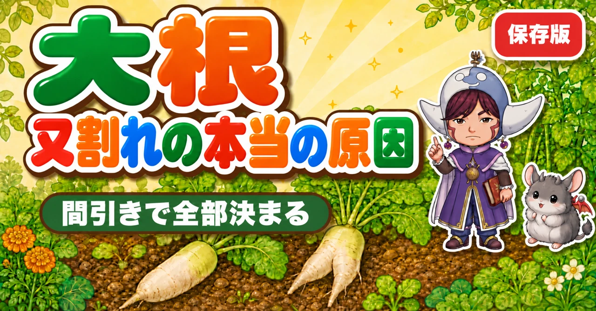
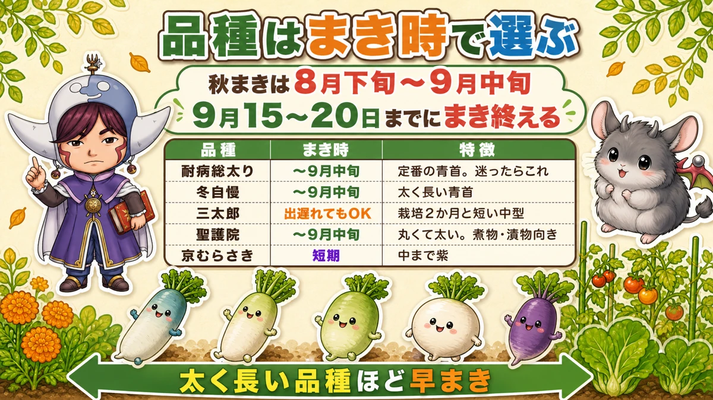
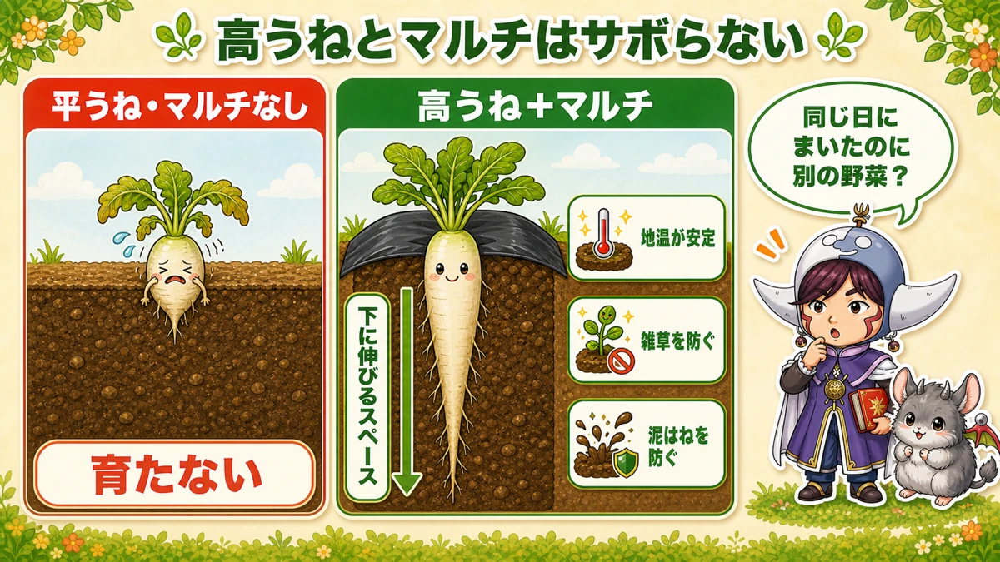
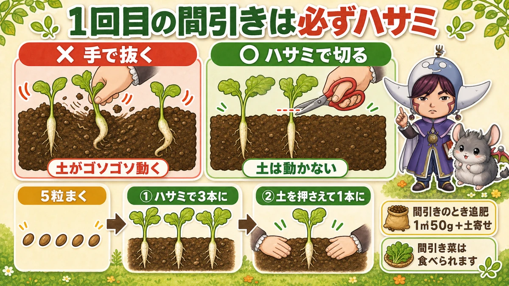
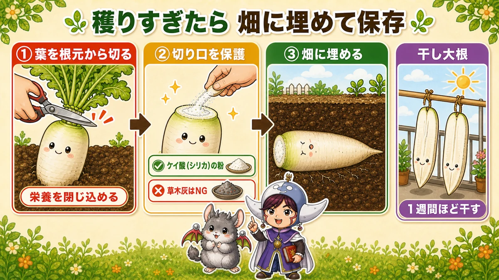
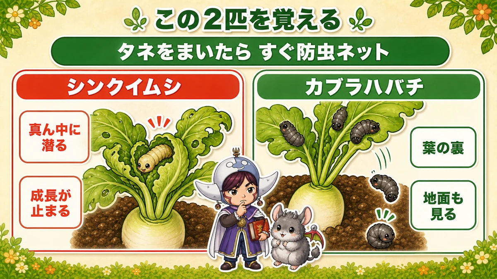
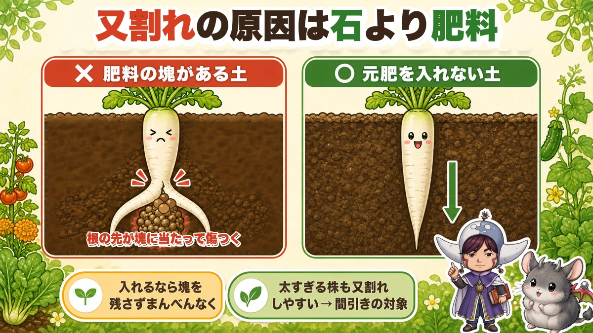
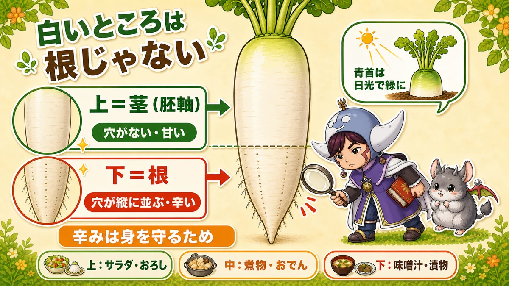

大根の育て方｜種まき・間引き・又根の対策から収穫と保存まで

📖 この記事の目次
この記事で分かること
- 大根は、食べ切れる長さと収穫したい季節から品種を選びます。長い大根とミニ大根では、必要な土の深さも日程も違います。
- まっすぐな姿を目指すなら、石だけでなく土や肥料の塊も取り除きます。肥料を増やす前に、前作の残りを確認するのが近道です。
- 種まき後は、発芽、中心の芽、混み具合の順に見ます。水やりと間引きは、毎日の習慣だけで決めません。
- 二股、曲がり、表面の割れ、内部の空洞は別の症状です。それぞれ、土づくりや生育中の記録に戻って原因を探します。
- 収穫は葉の大きさだけで判断せず、品種の予定と首の太さも使います。食べる分から順に抜くと、採り遅れを減らせます。
- まき時や肥料には異なる栽培法があります。このページでは条件の違いも整理し、最後に実物で根と胚軸を観察します。
大根を抜いてみたら二股。「石があったんかな」で終わらせたくなるところですが、肥料の塊や間引きの際の土の動きも確認したいんです。白い部分は土の中なので、葉だけ見ていても分からないことがあるんですよね。
みなさんが初めてまくなら、早見から作業の順番へ。すでに育てていて困っているなら、症状の章へ進んでください。『今年の作業を決めるための数字』と『抜いたあとに振り返る観察』を、必要なときに取り出せる形でまとめました。
まず覚えるのは、肥料も水も「多いほど安心」とは限らないこと。根が伸びる場所を整え、芽を傷めず、適期に食べる。ここから始めれば大丈夫です☺️
早見：大根の育て方（ひと目で分かる数字）
計画に使う時期と間隔
- 秋まき：8月下旬〜9月にまき、11〜12月に収穫する作型が中心です。大きな大根をねらう説明では9月前半〜中旬、虫を避ける説明では10月上旬〜下旬と、栽培の狙いで適期が分かれます。
- 地域差：早く冷える地域では、秋に育つ時間を先に確保します。暖かい地域の10月まきの話を全国共通にはしません。種袋の地域別の適期を確認してください。
- 冬まき：10月以降に短形タイプを使い、春の収穫を目指す作型があります。どの秋用品種でも冬にまける、という意味ではありません。
- 春まき：3〜4月から始めて5〜6月の収穫を目指します。春に向き、とう立ちしにくい品種を選ぶことが前提です。
- 収穫日数：ミニで40〜50日、短形で50〜60日、一般的な青首で80〜90日という品種の例があります。すべてを平均せず、手元の種袋の表示を使います。寒い時期は表示どおりに進まない場合があります。
- 株間：種まきの実演では30cm間隔の例があります。葉の広がりと品種に合わせて確認する数字です。小さく食べる栽培と、大きな一本を育てる栽培は区別します。
- うね幅：一列なら60cm、二列なら80cm〜1mという例があります。ネットの裾を埋める場所と、見回りの通路も残します。
- うねの高さ：排水できる畑は平うねの方法、水がたまりやすい畑は15cm以上高くする方法があります。どの畑でも高うね必須とはしません。
- 耕す深さ：長い大根は30〜40cmを目指す説明があります。丸型、短形、ミニはクワで耕せる範囲を使う説明もあります。根の長さとセットで決めます。
- 土の酸度：pH5.5〜6.5が材料にある目安です。酸度調整を毎回する方法と、測って必要なときだけする方法があります。
種まきから間引きまでの目安
- 種を置く深さ：5mm〜2cmと幅があります。1cm前後の説明が多く、1〜1.5cmという例もあります。土の状態と品種の表示に合わせます。
- 一か所の粒数：2〜6粒。春まきで2粒、一般的な説明で3〜4粒、虫に失う分を見込む方法で5〜6粒と、理由が違います。
- 粒どうしの間隔：約1cm。三つの小穴を三角形に配置し、一穴一粒で合計3粒にする方法もあります。
- 芽が出るまで：秋は3〜4日、冷える時期は約1週間、冬の栽培例では20日。冬も秋と同じ日数で待つ計画にしません。
- 間引き：1〜3回と説明が分かれます。2回の方法では、本葉3〜4枚のころと6〜7枚のころが区切りです。回数より、残す本数と混み具合を見ます。
- 土づくりの時期：種まきの2〜3週間前までに済ませる説明が中心です。未熟な有機物をまく直前に入れる段取りは避けます。
- 元肥：入れない方法と、あらかじめ入れる方法があります。前作の肥料が残る場所と、初めて使う土を同じ扱いにしません。
- 追肥：なしで育てる方法と、最終の間引きごろに補う方法があります。収穫が近い時期や冷え込んだ時期に、遅れを取り戻そうと足しません。
- 防虫ネット：種まき当日から。目の細かさは1mm以下、幅1.8mという例があります。支柱はまいた場所から20cm以上離し、葉の広がる空間を確保します。
- 収穫の太さ：一般的な大根の首は直径7〜8cmが目安です。小型や丸型もこの数字で抜く、という意味ではありません。
- 連作の間隔：材料では、同じ場所で1〜2作続ける栽培例があります。一律の休ませる年数は示されていません。前作の状態を記録し、問題があった場所で連作を続けない判断が必要です。
数字を畑の予定へ変える
例えば『短い大根を食べ切る』なら、長いタイプの80〜90日をそのまま予定に入れず、選んだ短形の表示を見ます。『大きくして冬に食べる』なら、秋の育つ期間を確保したうえで、冬まで残せる特性かを確かめます。収穫が早い品種と、畑に長く置ける品種は同じ意味ではありません。
何本まくかも、食べるペースから逆算できます。一本を食べるのに時間がかかるなら、成熟の早さが違う品種を組み合わせる計画が候補です。まく日をずらす方法もありますが、後まきが追いついて収穫が重なる場合があります。日付をずらせば必ず分散できる、とは思わない方がラクです。
- 品種の長さと、土を耕せる深さが合っている
- 地域別の種まき期間を確認した
- 元肥を足す前に、前作で入れたものを振り返った
- 間引きで見る葉の枚数を控えた
- 収穫の予定と、食べ切れる本数を考えた
この五つが決まったら、次は土づくりです。種まき当日に全部やろうとすると、最後に「とりあえず肥料も入れとこ」が出やすいので、準備だけ先に進めておきましょう。
作業の手順（時期の順）
1．品種と、収穫を終える時期を決める

- 『長い一本』『短く食べ切る』『丸い大根』から、使いたい形を選びます。
- 土をどこまで耕せるか確認し、長さに無理があるなら短形やミニを候補にします。
- 地域別の種まき適期と収穫日数を、種袋で読みます。
- 収穫を分けたい場合は、成熟の早さが異なる品種を組み合わせます。
- 複数の品種は列ごとに分け、名前とまいた日を残します。
小さい大根を選ぶのは、妥協ではありません。深い土づくりの負担を減らせて、食べ切りやすいという利点があります。長い大根を作るために、硬い下層を無理に残したまままくより、用意できる土と品種を合わせる方が進めやすいです。
秋にまくつもりでも、種が春用なのか秋用なのかは確認してください。大根という名前だけで日程を決めると、とう立ちしやすい時期や、育つ日数を見落とします。とう立ちは、食べる部分を育てる段階から花を咲かせる段階へ進み、茎が伸びてくることです。
日程を組むときは、次にその場所を使う野菜も見ます。冬から春まで置く予定なのに、早い時期に夏野菜の準備が始まると、収穫と場所の明け渡しが重なります。『いつまくか』と同じくらい、『いつまで置くか』が大事なんですよね。
2．土の深さと排水を調べる
- まく場所を掘り、石、固い土の塊、前作の根や未熟な有機物を確認します。
- 長いタイプなら30〜40cmを目標に、根の進む層を整えます。
- 石を拾い、土や堆肥の塊は細かく崩します。表面がふかふかでも、下の硬さを残さないようにします。
- 雨のあとに水が停滞するなら、高さ15cm以上のうねと水の逃げ道を検討します。
- 一列60cm、二列80cm〜1mという幅の例を使い、見回りの通路も確保します。
材料には、深さ30cmの穴に10Lの水を入れ、約1時間で大部分が引くかを見る方法があります。排水の状態を知る補助ですが、この一回だけで畑全体が大丈夫とは判断しません。ふだん雨のあとに水が残る場所も合わせて見てください。
掘ってみると、上は柔らかいのに、途中から急にクワが入りにくくなることがあります。そこが根の通り道をふさぐなら、上だけ整えても問題が残ります。短形への変更も含めて、種をまく前に対応したいところです。
二股の原因は石に限りません。肥料の濃い塊、硬い土、根の傷みも関わります。石を全部拾ったから今年は安心、というより、根が進む場所に『ぶつかるもの』『傷めるもの』を残さないと考えると整理しやすいです。
3．前作の履歴を見て、肥料の方針を決める
- 前作の野菜と、入れた肥料の記録を確認します。
- 葉ばかり茂った、肌が荒れたなどの様子があったなら、元肥を増やす前提を見直します。
- 酸度は必要に応じて測り、pH5.5〜6.5という目安と照らします。
- 元肥を使う場合は、まく2〜3週間前までに土づくりを済ませる計画にします。
- 肥料が一部に集まらないよう、深さ15cm以上の層へよく混ぜ、塊をなくします。
元肥は、栽培を始める前に土へ入れる肥料です。大根では、元肥を入れない栽培法もあります。とくに前作の肥料が残る場所は、新しい作物を始めるたびに同量を追加する必要があるか考えてください。
逆に、初めて使う土まで全部無肥料でよいとは限りません。肥料が多すぎても少なすぎても、食べる部分が十分に太らない原因になります。ここは『大根は肥料不要』という合言葉だけで決めず、土の履歴を確かめる場面です。
混ぜ方も、ただ表面をならすだけでは足りません。クワを縦に入れて土をほぐす説明では、前後に寄せるだけで肥料を一方向へ集めないことが重視されています。量を控えたつもりでも、一か所に固まれば根の近くは濃くなります。少量と均一、この二つをセットにしてください。
未熟なものを埋めた直後に種をまく流れは避けます。準備期間を取るのは、作業を早く終わらせるためだけでなく、新しい根の近くで土の状態が急に変わるのを避けるためでもあります。
4．うねの表面を整え、覆う準備をする

- 土の塊を崩して、種を置く場所の高さをそろえます。
- マルチを使うなら、土の表面を覆い、端を土へ埋めて固定します。
- 種まき穴の底が周りより落ち込んでいたら、土を補って高さを直します。
- 防虫ネットをかける支柱の位置を決め、将来の葉の広がりを見込みます。
- ネットの端を埋める土も、作業できる位置に残します。
マルチは、うねの土を覆うためのものです。防虫ネットは、支柱で空間を作って株を覆うためのもの。どちらも覆いますが、役割も設置場所も違います。名前がごちゃっとしてきたら、土の上にあるのか、株の上にあるのかで分ければ大丈夫です。
マルチの端が浮いたままだと、保水のために張ったのに土が乾きやすくなります。風でめくれる場所もできるので、留め具を置くだけで終わらず、周囲の土で端を押さえます。種まき穴をきれいに作る前に、周りの仕上げも確かめたいところです。
暑さが厳しい時期は、土の乾きだけでなく、覆いの下の熱のこもり方にも注意します。乾燥を抑える方法と、温度を上げすぎない方法は、いつも同じとは限りません。暑い日の対応は、後ろの両論の章で整理します。
5．土の水分を整え、種をまく
- 土が乾いているなら、種まき前に水分を補い、表面の状態が落ち着いてから作業します。
- 品種に合う株間を取り、深さ約1cmを中心に、採用する方法の深さへ穴をそろえます。
- 一か所3〜4粒の方法なら、粒を約1cm離して置きます。三角形に三つの小穴を作る方法も使えます。
- 種が露出しないよう土を戻し、土と種が接するよう押さえます。
- 品種名と日付を記録し、その日のうちに防虫ネットを設置します。
押さえる作業を『鎮圧』と呼びます。強く押す説明と軽く押す説明がありますが、共通する目的は種と土の接触を整えることです。強さだけをまねて、土を硬く固めるのが目的にならないようにしてください。
一か所へ全部の種を重ねるより、少し離すと、出てきた芽を見分けやすくなります。後で残す株を選ぶことも、種まき時点から考えておくわけです。粒数を増やすのは虫に失う分を見込む方法ですが、その分、間引きを先延ばしにしすぎない予定も必要です。
水をまく前に入れる方法は、種を流しにくくする工夫です。まいた後の水やりを全面禁止する話とは分けてください。材料にある『その後3〜4日控える』という説明は、最初から土に水分があることが前提。乾いた土で、その日数だけを守って待つ使い方にはしません。
6．ネットを張り、発芽と中心の芽を見守る
- 目の細かさを確認し、支柱へネットをかけます。
- 支柱は種をまいた位置から20cm以上離す例を参考に、横にも上にも余裕を取ります。
- ネットの裾を土で押さえ、開いた端や隙間を残さないようにします。
- 発芽したら、出た本数と、中心から新しい葉が伸びているかを見ます。
- 作業で開けた後は、裾と留めた箇所を戻してから離れます。
虫を防ぐ準備は、芽が出たら始めるのではなく、まいた日に済ませます。ただし、ネットがあっても中が無虫とは限りません。土にいる虫や、すでに内側に入った虫は、そのまま株へ近づけます。ネットを張ったから、見回りは終了！とはならないんですよね。
見る場所は、葉の表面だけでなく中心です。外側の葉が元気でも、新しい葉の出る部分が食べられている場合があります。葉の枚数を数えるついでに中心も確認すると、間引きの前に残す株を選びやすくなります。
冷える時期は、秋より発芽に時間がかかります。秋の3〜4日だけを基準に、出ないからと毎日掘り返さないようにします。まいた日、気温の変化、土の湿りを並べて確認してください。
7．混み具合を見ながら、残す株を選ぶ

- 本葉が増えてきたら、各穴の本数、虫の被害、根元の重なりを見ます。
- 弱い株、中心を傷めた株、根元が重なる株を、間引く候補にします。
- 小さいうちにハサミを使う方法では、残す株を切らないよう、不要な株の根元を切ります。
- 抜く方法なら、残す株の周りを指で支え、不要な株だけを上へ静かに抜きます。
- 作業後は株元のぐらつきと土の隙間を確認し、必要な場所を整えます。
私も一年目は、大根を手で抜いていて、くねくねの大根になりました。ここで思い出したいのは、抜く株だけでなく、残る株の周りの土も動くことです。勢いよく抜けたら成功、とは言い切れないんですよね。
間引きは、早く全部を一本にすればよいわけでもありません。虫に食べられる分を見ながら株を選べるよう、少し待つ方法があります。ただ、ずっと数本のままだと、葉が押し合い、一本ずつが十分に太れなくなります。『予備を残す』と『混み合いを放置する』は分けてください。
二回で進めるなら、本葉3〜4枚のころと6〜7枚のころを確認の区切りにできます。一回や三回の方法もあるので、回数の達成だけを目的にせず、選んだ栽培法の残す本数まで確かめます。
間引いた葉は、健全なものなら料理へ回す選択肢があります。食べるつもりの間引き菜を、土の上で踏んだり、傷んだものと混ぜたりしないよう、作業前に分ける入れ物を用意しておくとラクです。
8．水分、肥料、株元を必要な分だけ整える
- うねの横の土を少し掘り、表面だけでなく内側の湿りを見ます。
- 握って形を保てる湿りがあるなら、表面の乾きだけで追加の水を決めません。
- 最終の間引きごろに、葉と首の生育、元肥の有無を確認します。
- 追肥する栽培法では、株元に肥料を集めず、採用する方法の位置と量を守ります。
- 株が倒れたり、間引き後に穴ができたりした場所は、土で支えて隙間を整えます。
葉の量と白い部分の太さは、必ずしも比例しません。葉が立派なので順調と思っていたら、抜いた大根は細い、ということがあります。追肥を考えるなら葉だけで判断せず、首の太さと、これまでに混み合った時期がなかったかを見ます。
土寄せは株元へ土を寄せる作業です。青首の上の部分が出ること自体は品種の性質なので、見えたら慌てて全部埋める必要がある、とはしません。倒れそうな株を支える場面と、普通に首が出ている場面を分けてください。
葉がネットへ当たったら、肥料では解決できません。支柱の幅や高さを直し、葉に横から力がかからない空間を作ります。長く使うネットほど、設置した日の余裕が、そのまま収穫前まで続くかを見直したいです。
9．太さを確かめて収穫する
- 品種の収穫日数へ近づいたら、葉の姿と首の太さを合わせて見ます。
- 一般的な大根では首の直径7〜8cmを目安に、食べる分から収穫します。
- 首が土の上へ出にくいタイプは、周囲の土を指で少しよけて太さを確かめます。
- 首を持ち、上向きに引きます。横へ引き倒したり、強くねじったりしません。
- 土が硬く抜きにくい場合は、周りを慎重にゆるめてから取り出します。
- 収穫後は葉を分け、白い部分を乾燥させすぎないようにします。
もう少し太くなるかな、という気持ちは出ます。でも大きさだけを追うと、内部にすが入って食感が落ちることがあります。保存しやすい品種でも、ずっと置けるわけではありません。最初の一本を切って状態を確かめると、残りの収穫も判断しやすくなります。
一度に全部抜くより、食べる分を順番に収穫する計画が使いやすいです。ただし、強い冷え込みや春のとう立ちが近いなら、食べる速度だけでは決められません。保存へ移すか、早く使い切るかも合わせて考えます。
葉が立つ、外へ倒れるという説明は、観察する段階で言い方が違います。葉の向き一つで収穫を決めず、『姿が変わってきたので太さを確認する』くらいの使い方にしておきましょう。
10．余る分は、畑で育て続ける前に保存へ回す

- すぐ料理する分と、保存へ回す分を分けます。
- 土中保存では、葉を切って扱う方法を選びます。切り口に使う資材は、用途が確認できるものだけにします。
- 一度抜いて埋める方法なら、大根同士が重ならないように並べ、土をかけます。
- 雨で水がたまる場所や、凍結しやすい条件を避け、保存場所を記録します。
- 使うときに状態を見て、長期保存の日数を保証とは考えません。
- 土中保存が向かない場合は、細く切って干す方法も候補にします。
材料には、畑に残して約一か月、抜いて埋め直して約二か月、室内の条件を整えて一〜三か月という例があります。これは別々の保存法の数字です。都合のよい最長の日数だけを選び、どの方法でもその期間大丈夫とはしないでください。
寒い場所では、畑がいつでも冷蔵庫になるとは限りません。大根には水分が多く、強い冷え込みで傷むことがあります。寒さに当てて甘くしたい気持ちと、凍らせずに保つ必要は分けて考えます。畑に置く期間を延ばすなら、地域の冬の条件も見ます。
干す場合は、みずみずしさを残す保存とは別の道です。料理に使う形へ切って乾かし、干したあとの湿りや保管状態も確認します。干したから常温で一年間無条件に置ける、という受け取り方にはしません。
収穫が終わったら、土の中の虫と、残った根の様子も確認してください。形が悪かった株だけでも写真を残し、列の位置と結びつけると、次の土づくりに使える記録になります。
失敗の見分け方（症状→原因→やること）
芽が出ない、出方がそろわない
- 症状：まいた穴の一部だけ芽が見えない、予定日を過ぎても動きがありません。
- 考えられる原因：冷え込みで発芽が遅い、土の水分が足りない、種と土の接触が悪い、深さがばらついているなどです。
- やること：まいた日と気温の変化を見て、穴の高さ、土の湿り、種まきの深さを確認します。乾きと低温を区別してから、まき直しを考えます。
冬の栽培例では20日という発芽日数もあります。秋の待ち時間だけで失敗と判定せず、条件を並べてください。一方、湿ったままの土に毎日水を足すことも、改善になるとは限りません。まず水が足りないのか、すでに多いのかを確かめる順番です。
芽は出たのに、中心の葉が増えない

- 症状：外の葉は残っていますが、真ん中の新しい葉が出ない、芯の色が変わっている、中心だけ食べられています。
- 考えられる原因：シンクイムシが、成長点の近くへ入り込んでいる可能性があります。
- やること：株の真ん中をそっと確認し、虫がいれば取り除きます。間引き前なら、中心が健全な株を残す候補にします。
成長点は、これから新しい葉を作る部分です。外側の葉の穴より、ここが傷む方がその後の生育へ響きます。ぱっと見た葉の元気だけで判断しないのが大事です。中心が傷んだ株へ肥料を足しても、虫を取り除く作業の代わりにはなりません。
ネットがある場合も、作業で開けた箇所と裾を調べます。内側で被害が出たときは、ネットを張る日を遅らせたか、土から出てきた虫かなど、設置前後の様子も振り返ります。
葉ばかり大きくなり、首が細い
- 症状：葉の量は十分あるのに、食べる部分の太り方が遅く見えます。
- 考えられる原因：肥料が多い、間引きが遅い、まき時が遅い、土が硬い、水はけが悪い、すでに冷え込んでいるなどです。
- やること：元肥の履歴、本数、種まき日、首の太さ、土の湿りを順に確認します。葉の大きさだけで追肥を決めません。
肥料不足も原因の候補ですが、葉が大きい状態で『細いから足す』と、多すぎる条件を強めることがあります。一か所に3〜4本残ったままなら、それぞれが細い状態で終わる場合もあります。まず、一本あたりの場所が確保できているかを見てください。
寒くなってからは、肥料だけで秋の遅れを取り戻す計画にしません。保温を使う栽培法はありますが、もともと必要な暖かい日数が残っているか、品種が向くかも関わります。小さいまま収穫する判断も含めて考えます。
抜いたら二股になっていた

- 症状：一本で伸びるはずの下部が、二つ以上に分かれています。
- 考えられる原因：石、硬い土、肥料や堆肥の塊、未熟な有機物などで根の先が傷んだ可能性があります。水や間引きの影響も候補です。
- やること：分かれた位置と、掘り出した場所の土を照らします。次作では障害物と塊をなくし、直前に肥料を集めない準備へ変えます。
収穫した二股を、その場で一本へ戻すことはできません。でも次に使う記録にはなります。毎回似た深さで分かれるなら、土の硬い層がないかを見る。特定の場所だけなら、そこへ肥料が集まっていなかったか振り返る。姿から、確認する場所を絞っていく感じです。
二股という結果だけで、原因を一つに断定しません。石が見当たらないときに、見えない石を探し続けるより、肥料の混ぜ方や土の硬さまで確認を広げてください。
首や白い部分が横へ曲がる
- 症状：上部が傾き、白い部分も曲がった方向へ育っています。
- 考えられる原因：間引きが遅れて葉が押し合う、上部を支えにくい、ネットが葉へ当たる、抜く作業で周りの土が動くなどです。
- やること：隣の葉とネットの接触を調べ、支柱を調整します。ぐらつく株は株元の土を整え、次の間引きでは残す株を支えます。
曲がってから、葉だけを強く引いて直そうとはしません。葉を押すものを取り除き、これ以上横向きの力が加わらないようにする方が先です。ネットの高さが足りなくなったときは、作物が悪いのではなく、用意した空間が小さくなったということです。
白い部分の表面に亀裂ができる
- 症状：大根の表面が、縦などに裂けています。
- 考えられる原因：肥料が多く急に太る、収穫を待ちすぎる、暖かい冬に肥大が続くなどが挙げられます。
- やること：追加の肥料をいったん見直し、収穫日数と太さを確認します。食べごろの株を、さらに大きくするために残し続けません。
『又割れ』という呼び方で二股と混ざることがありますが、根が分かれる症状と表面が裂ける症状は別に記録します。写真を残すと、言葉だけで説明するときの取り違えも減らせます。
切ると中が細かく空き、食感が粗い
- 症状：中心がスポンジのようになり、みずみずしさが落ちています。
- 考えられる原因：収穫を遅らせたことによる、す入りが候補です。品種や育つ勢いも関わります。
- やること：同じ時期に育てた残りを確認し、収穫を前へ進めます。次は予定日と試しに切った日の状態を残します。
外から見ただけでは、内部の状態を決めにくいです。一本を切ったときの情報を、残りにも生かしてください。首が太くなってからの日数を見ずに『まだ畑にあるから新鮮』と思うと、食べごろを過ぎることがあります。
中心に、大きな空きがある
- 症状：細かなすき間ではなく、切った中央にまとまった空洞が見えます。
- 考えられる原因：根が育つ途中の水分不足、肥料の偏り、肥料過多、未熟な有機物などの説明があります。
- やること：収穫の遅れだけに絞らず、生育中の乾き、マルチの端、元肥の量と混ぜ方を振り返ります。
す入りと空洞化は、切った中が空いているという点では似ていますが、次に直す作業が違います。採り遅れなら収穫の計画へ。育つ途中の条件なら水分と土づくりへ。ここを分けるだけで、『来年は早く抜けば全部解決』という見直しを避けられます。
葉裏や芯の周りに、小さな虫が増える
- 症状：外側の低い葉の裏、葉の付け根、中心付近にアブラムシが集まっています。
- 考えられる原因：虫が入り込んだことに加え、肥料が多い、覆いの中の温度や通気が増殖しやすい条件になっている可能性があります。
- やること：葉裏と中心を見て取り除き、ネットの隙間と内側の状態を確認します。追肥を増やさず、過剰になっていないか見直します。
ネットの内側は、外より安心と思いやすいですが、入った虫が増える場所にもなります。防ぐ道具と、今いる虫を見つける作業は両方必要です。葉の表だけを見て通り過ぎず、外側の葉を裏返すところまで確認してください。
自作の洗剤や油の液、薬剤の量を、虫の種類が分からないまま試す手順はここには置きません。まず株のどこに、どの虫がいるかを確かめます。別の症状へ同じ対処を広げないことも、野菜を傷めないための確認です。
説明が分かれていること
種まきは9月か、10月か
- Aという説明：長く大きな大根は、9月前半から中旬までにまき、秋の暖かい期間を十分使います。
- Bという説明：虫の多い時期を避けるため、10月上旬〜下旬へ遅らせます。小さくなりやすい分を、品種や保温で補います。
- どう考えればよいか：早まきは大きさ、遅まきは虫の少なさを重視した方法です。地域の冷え込み、選ぶ品種、食べたい大きさをそろえて比較します。
9月が正しく10月が間違い、という決め方ではありません。冷える地域で遅まきを使う場合と、秋が長い地域で使う場合では、残っている生育期間が違います。近年の暑さを理由にした遅まきの説明もありますが、その年と場所の状態を見てください。
採用するなら、遅くまく部分だけでなく、短形を選ぶのか、保温を組み込むのかまでまとめて考えます。大きな秋大根の品種だけを選び、遅まきの日付だけを組み合わせると、狙いがちぐはぐになります。
肥料は最初に入れるか、入れないか
- Aという説明：元肥を用意し、まく前に土へ混ぜます。初めて使う場所など、肥料分を確保する必要がある条件を含みます。
- Bという説明：前作の残りを使い、元肥も追肥も加えず育てます。とくに短形やミニで、追加を控える説明があります。
- どう考えればよいか：前作の履歴と土の状態が違います。元肥の有無だけで優劣をつけず、自分の畑に残る分を先に見ます。
どちらでも注意したいのは、肥料の塊と、使いすぎです。『少なめ』はすべての土でゼロという意味ではなく、『入れる』は毎回同量を追加する意味でもありません。別々の栽培法の配合を合計すると、どちらの方法より多くなるので、その足し算はしないようにします。
材料には生育前半の肥料の効き方を重視する説明もあります。前半に必要な分を確保する話と、収穫直前に追加して大きくする話は区別してください。寒くなってから、前半の管理を同じようにやり直すことはできません。
追肥は不要か、間引きのころに必要か
- Aという説明：畑の蓄積や元肥を使い、追肥なしで進めます。
- Bという説明：最後の間引きの時期に補い、その後の肥大へつなげます。
- どう考えればよいか：最初の肥料と土の履歴を確認し、葉と首の様子を合わせて判断します。追加する回数だけを予定表に固定しません。
追肥がない方法に、追肥がある方法の量だけ足せば、よりよく育つという話ではありません。逆に、元肥を減らしたのに、その後の生育確認まで省くのも別の話です。一つの栽培法の中で、どこから肥料を受け取る計画なのかを理解してください。
11月の追肥を避ける説明は、秋まきが冷え込む段階の話です。全国の全作型で11月という月だけが禁止、と丸暗記するより、低温期や収穫間近に追加しても、思ったように育たない点を押さえます。
土を強く押すか、軽く押すか
- Aという説明：種と土をしっかり接触させるため、強い鎮圧を重視します。
- Bという説明：強く固めすぎず、手で軽く押さえる方法を使います。
- どう考えればよいか：土の粒の状態と湿り方、種まき穴の底と覆土後の表面を分けて見ます。力の言葉だけを取り出し、全体を足で踏む手順にはしません。
共通するのは、種の周りに大きなすき間を残さないことです。マルチ穴の底が沈むほど押したなら、そのまま低い位置へ種を置かず、高さを整え直す説明があります。押す作業は、穴の形と水のたまり方まで含めて確認するものです。
間引きを待つか、早めに減らすか
- Aという説明：無農薬では、虫の被害を見てから健全な株を選べるよう、早すぎる一本立ちを避けます。
- Bという説明：混み合いが長引くと、葉が押し合い、曲がりや肥大不足へつながるため、遅らせすぎません。
- どう考えればよいか：同じ『待つ』でも、選べる本数を残す段階と、株どうしが押し合う段階は別です。葉の枚数と混み具合を見て進めます。
回数も、一回、二回、三回と違います。虫の多さ、最初の粒数、季節によって条件が変わるからです。冬まきは生育がゆっくりだから何もしなくていい、とせず、その栽培法の間引きの区切りを確認します。
双葉の向きから、細い根が伸びる方向を考えて残す説明もあります。ただ、方向だけが良くても中心が食べられた株では困ります。まず健全さ、その次に位置や向き。観察項目に順番をつけると選びやすいです。
暑い日に薄い布を直接かけるか、見送るか
- Aという説明：不織布を直接かけ、乾燥を抑えます。
- Bという説明：高温がこもって芽を傷めることがあり、暑い年は使う時期を慎重に選びます。
- どう考えればよいか：布をかけること自体を正解にせず、土の湿りと内側の温度を見ます。種まきを一週間ほど待つ選択肢もあります。
表面を乾かさない工夫が、熱をためる原因になる場合があります。暑さが続くなら、曇りが続く日を選ぶ、まく時期を調整するなど、覆い以外の手も検討できます。枯れたあとに水を追加し続ける前に、乾燥で傷んだのか、熱がこもったのかを区別したいです。
防虫ネットを最後まで残すか、冷えたら外すか
- Aという説明：収穫まで覆いを残し、防虫に加えて寒い時期の生育にも使います。
- Bという説明：平均気温14℃未満が続き、虫が減る段階で外し、葉がネットに当たるのを避けます。
- どう考えればよいか：気温だけでなく、実際の虫、葉の広がり、ネットの空間を確認します。暖かい日が続く年は、暦だけで外しません。
葉が当たっているからとすぐ外す前に、支柱を広げて対応できるかも見ます。ネットを残すなら、中に虫がいないか確認を続けます。外す場合も、虫を見る作業そのものを終えるわけではありません。
土寄せするか、そのまま育てるか
- Aという説明：倒れた株を支える、二本立てから一本を収穫した穴をふさぐ、といった場面で土を寄せます。
- Bという説明：通常の生育では土寄せをせずに、形のよい大根を収穫する方法があります。
- どう考えればよいか：『首が出た』だけで必要と決めず、株が安定しているか、根元に穴があるかを見ます。
土寄せなしの方法と、倒れた株への手当ては、同じ状況の比較ではありません。いま目の前で株が傾いているなら、何が押しているかを調べたうえで支えます。曲がった原因がネットなら、土だけを足しても力は残ります。
保存時の葉は根元から切るか、少し残すか
- Aという説明：葉を付け根から落とし、切り口を保護して土へ埋める方法です。
- Bという説明：掘り出す目印として約5cm残し、抜いた大根へ土をかける方法です。
- どう考えればよいか：葉の長さだけで比較せず、切り口の扱い、埋め方、探し出す方法までそろえて採用します。
保存は、株をそのまま長く育てることと区別します。材料には、首を低くして埋める方法や、水がたまらないよう傾きをつける方法もあります。切り方だけ拾って、水はけの悪い場所に置かないようにしてください。
よくある質問
深く耕せない畑でも作れますか
短形やミニ、丸型を候補にできます。長い大根と同じ深さを必要としない説明があるためです。ただし、短いから石や肥料の塊を残してよいわけではありません。使う範囲の土を整え、品種の長さと土の深さを合わせます。
種まきが遅れたら、肥料を増やせば追いつきますか
肥料だけで、残りの暖かい日数を増やすことはできません。遅まきに向く短形などを選ぶ、保温を組み込む、小さめで収穫する計画を考えます。すでに冷え込んだ株へ大量に追加しても、秋の初期生育の代わりにはなりません。
一か所に何粒まくのがよいですか
材料の栽培例は2〜6粒と幅があります。3〜4粒を使う説明が多く、少なくまく方法は発芽のよさ、多くまく方法は虫への備えを重視しています。まず採用する方法を決め、増やした分をいつ選び直すかまで予定に入れます。
発芽したら、すぐ一本にしますか
虫の被害を見て残す株を選ぶため、すぐ一本にしない方法があります。ただし、葉が押し合うまで放置しません。本葉の枚数と混み具合を確認し、回数だけでなく最終的な本数を管理します。
元気で葉の大きい株を残せばよいですか
中心が健全で、根元が重なりすぎず、位置がよい株を見ます。葉が極端に大きい株について、又根の可能性を考える説明もありますが、それだけで確定はできません。大きさ一つで選ばず、中心と根元まで確認してください。
一つの穴で二本育ててもよいですか
二本立ての方法はありますが、片方が曲がりやすいという注意もあります。一本の形を整える栽培とは狙いが違います。片方を収穫したあとは、残る株の周りにできた穴を土でふさぎ、露出とぐらつきを確認します。
土の表面が白っぽく乾いたら、水が必要ですか
表面だけで決めず、うねの横を少し掘って中の湿りを見ます。握って形が残る程度の水分があるなら、追加が不要な場合があります。『毎日少しずつ』を決まりにせず、雨と土の状態を合わせて判断します。
青首の緑のところは、土から出ていて大丈夫ですか
青首は、上部が地上へ出る性質があります。見えていること自体で失敗にはしません。倒れそう、ネットが葉を押している、土が硬く根が進めないなど、別の問題がないかを確認します。
間引いた小さな大根を植え直せますか
深い穴へ入れて植え直す栽培例はありますが、形は崩れることがあります。最初から植え替えを前提にせず、収穫する場所へ種をまく計画を基本にしてください。まっすぐな一本を目指す方法とは区別します。
ネットがあるのに、なぜ虫がいるのでしょうか
裾や開けた部分から入るほか、土から出る虫もいます。ネットの内側にいた虫も、張るだけでは取り除けません。目の細かさと隙間を確認したうえで、葉裏と芯を見る作業を続けます。
葉の向きだけで収穫を決められますか
葉が立つ、倒れるなどの説明には幅があります。姿の変化を、太さを確認する合図として使ってください。最後は品種の予定と首の太さを合わせ、必要なら一本を収穫して内部を確かめます。
す入りと空洞化は同じですか
細かな空きが増えて食感が粗くなるす入りと、中央にまとまった空洞ができる症状は分けます。前者では採り遅れ、後者では育つ途中の水分や土づくりも確認します。どちらも外観だけで分かるとは限りません。
収穫を分散するには、種まき日をずらせばよいですか
日付をずらす方法はありますが、後まきが追いつく場合があります。成熟の早さが違う品種を組み合わせる方法も候補です。列ごとに名前を残し、収穫を始める順を区別すると管理しやすくなります。
同じ場所に、もう一度大根をまけますか
一〜二作続ける栽培例はあります。冬に小型の大根を後作へ入れる方法もありますが、秋の長いタイプを同じように使えるとは限りません。前作で虫や形の問題があったなら、その原因を調べてから次の場所と時期を決めます。
寒くなるまで残せば、甘くなってお得ですか
寒さと甘みを結びつける説明はありますが、採り遅れや凍害の心配もあります。味だけを理由に長く置かず、品種の収穫期と地域の冷え込みを見ます。食べ切れない分は、育て続けるより保存へ回すことも考えてください。
学ぶ：大根の根と胚軸のしくみ🔬

白い部分を、上から下まで見てみる
食べる大根を一本置き、細い根が付いていた跡を探してみてください。上の方はつるっとしているのに、下へ進むと跡が見つかります。白いところを全部まとめて根っこと呼びたくなりますが、ここには根とは違う部分も含まれています。
大根の上部には『胚軸』があります。これは芽生えのとき、双葉と根の間にある部分です。大根ではその下胚軸と根が太り、食べる部分を作ります。土から出ているかどうかだけで、根か胚軸かを区切るわけではありません。
細い根は『側根』と呼びます。大根の側根は二方向へ出るため、抜いた実物に残る跡も、観察の手がかりになります。表面の印を調べると、ふだん食べているものの作りが見えてくるんですよね。
観察する順番
- 葉側と先端側を確認し、上と下を取り違えないよう置きます。
- 細い根の跡を上から下へ探し、並び方を見ます。
- 跡が見つかる部分と、上の滑らかな部分を比べます。
- 曲がった大根もあれば、跡の列がどちらへ向くか見比べます。
- 絵や写真へ、葉側、胚軸、根の位置を書き込んでみます。
つるっとした部分があるから、形が悪いから、というだけで育ち方の良し悪しを決めません。まずは植物の体の違いとして見る時間です。スーパーの大根でもできるので、畑がないみなさんも試せます。
葉の立派さと、食べる部分の太さは別に見る
育てる作業へ戻ると、上の葉と下の大根をセットで観察する理由が分かります。葉は大きいのに首が細いなら、地上だけ見た『順調』とは別の情報が得られます。種まき日、本数、虫の被害、肥料の履歴を並べれば、どこを振り返るか考えやすくなります。
ここでいきなり『窒素が多かった』と結論を決めなくて大丈夫です。葉を見た、首の太さを見た、抜いた形を見た。その三つを残してから原因を探すと、思い込みが減ります。理科の観察って、何かを当てる前に、違いを見つける作業なんですよね☺️
理科説明の確認資料：タキイ種苗「葉根菜のトウ立ちメカニズム」（https://shop.takii.co.jp/selection/toudachi2002.html）、タキイ種苗「おいしい野菜づくり」2018年春号・葉根菜の根の解説（https://www.takii.co.jp/tsk/bn/pdf/2018_sp_067_070.pdf）。
まとめ
大根の管理は、白い部分が土の中にあるからこそ、種まき前の準備と途中の記録が効きます。抜いたときに初めて分かることも、次の栽培へつなげられます。
- 品種の長さと、耕せる土の深さを合わせます。
- 石だけでなく、土や肥料の塊をなくし、元肥は前作の履歴から考えます。
- 種まき当日に防虫ネットを張り、発芽後も中心と葉裏を見ます。
- 間引きは、残す株の根と土を動かしすぎず、混み合いを長く残さないよう進めます。
- 水と肥料を追加する前に、土の中の湿り、残る本数、首の太さを確認します。
- 二股、曲がり、表面の裂け、す入り、空洞を分けて記録します。
- 食べごろになったものから収穫し、余る分は保存へ回します。
これから始めるなら、最初は『どんな大根を何本食べたいか』を決めてみてください。もう育てているなら、今日は葉の中心と首の太さを一緒に見るところから。全部を一度に覚えなくても大丈夫です。一本抜いたときの発見を、次の一本につなげていきましょう。
じゃがいもシリカ（ケイ酸の粉）
記事で「土に埋めて保存するとき、切り口につける粉」と書いたのがこれです。じゃがいもの名前がついていますが中身は天然のケイ酸で、切り口を守って腐敗を防いでくれます。1袋で種芋100〜150個分あるので、大根の土中保存には何年ぶんもあります。
![[商品価格に関しましては、リンクが作成された時点と現時点で情報が変更されている場合がございます。]](https://hbb.afl.rakuten.co.jp/hgb/565b74ce.f30a48e7.565b74cf.8a827250/?me_id=1368676&item_id=10000491&pc=https%3A%2F%2Fthumbnail.image.rakuten.co.jp%2F%400_mall%2Farakawaseed%2Fcabinet%2Fcompass1582111506.jpg%3F_ex%3D240x240&s=240x240&t=picttext "[商品価格に関しましては、リンクが作成された時点と現時点で情報が変更されている場合がございます。]")

防虫ネット
大根はまいた直後から狙われます。シンクイムシもカブラハバチも、ネットさえかけておけば入ってきません。無農薬でやるなら、いちばん最初に用意するものだと思っています。
![[商品価格に関しましては、リンクが作成された時点と現時点で情報が変更されている場合がございます。]](https://hbb.afl.rakuten.co.jp/hgb/56bc205d.0066fedc.56bc205e.af56d163/?me_id=1260467&item_id=10000299&pc=https%3A%2F%2Fthumbnail.image.rakuten.co.jp%2F%400_mall%2Fmarsol-morishita%2Fcabinet%2Fshouhinn%2Fbouchuu%2Fimgrc0090950099.jpg%3F_ex%3D240x240&s=240x240&t=picttext "[商品価格に関しましては、リンクが作成された時点と現時点で情報が変更されている場合がございます。]")
穴あき黒マルチ
高うねにして、これを張っておくと草が生えず、地温も保てます。大根は間引きのたびに株元を触るので、マルチがあると作業がずいぶんラクです。
![[商品価格に関しましては、リンクが作成された時点と現時点で情報が変更されている場合がございます。]](https://hbb.afl.rakuten.co.jp/hgb/55521906.a3595d78.55521907.92994d18/?me_id=1225177&item_id=10035007&pc=https%3A%2F%2Fthumbnail.image.rakuten.co.jp%2F%400_mall%2Fssn%2Fcabinet%2F02584092%2F07223762%2F4980356008386_1.jpg%3F_ex%3D240x240&s=240x240&t=picttext "[商品価格に関しましては、リンクが作成された時点と現時点で情報が変更されている場合がございます。]")